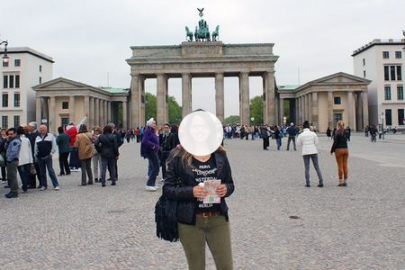
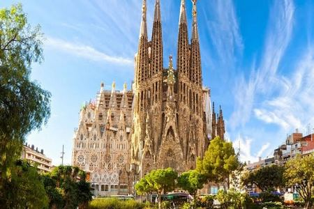
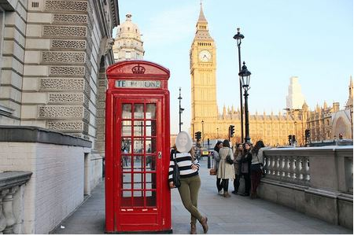
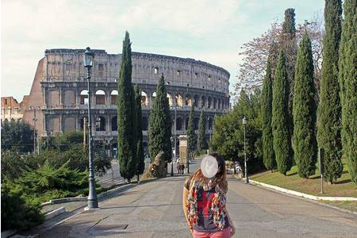

O principal ponto turístico de Berlim e da Alemanha é sem dúvida o Portão de Brandemburgo de Berlim,
stie.que é o símbolo mais importante da cidade e mais procurado pelos turistas.
É um dos monumentos mais importantes da Alemanha e mais simbólicos da história do século XX e da Europa.
Além de ser uma obra prima da arquitetura alemã, ele é símbolo da separação das duas Alemanhas,
que eram divididas pelo Muro de Berlim.
Barcelona:Igraja Sagrada Família

Os principais pontos turísticos de Barcelona e da Espanha foram construídos
pelo famoso arquiteto Antoni Gaudì. A principal obra e o ponto turístico mais
famoso que ele construiu é a Sagrada Família de Barcelona, uma igreja com uma.
grandeza incomparável e que ainda não está acabada, pela enorme quantidade de
detalhes e pelo tamanho que foi projetada.
Inglaterra: Torre Big Ben de Londres

Outro ponto turístico famoso e um dos símbolos da Europa é o Big Ben de Londres.
É no Big Ben que está instalado o parlamento inglês e é parada obrigatória para
qualquer turista que visita a cidade de Londres e a Inglaterra, independente da época.
Italia:coliseu

O principal ponto turístico da Itália é sem dúvida o Coliseu de Roma.
É um dos monumentos mais famosos do mundo e atrai nada menos do que 4
milhões de turistas todos os anos. Sua construção se iniciou no ano
de 72 d.C. e durante décadas, serviu de palco para gladiadores que
lutavam entre si ou com animais para um público de mais de 70 mil romanos.